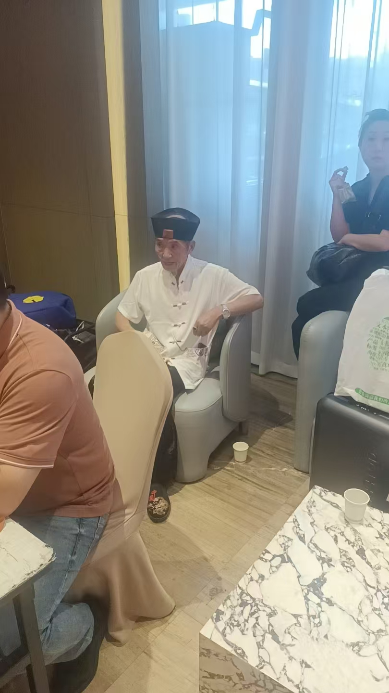
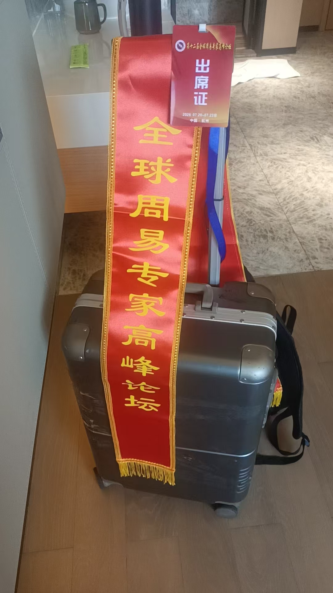
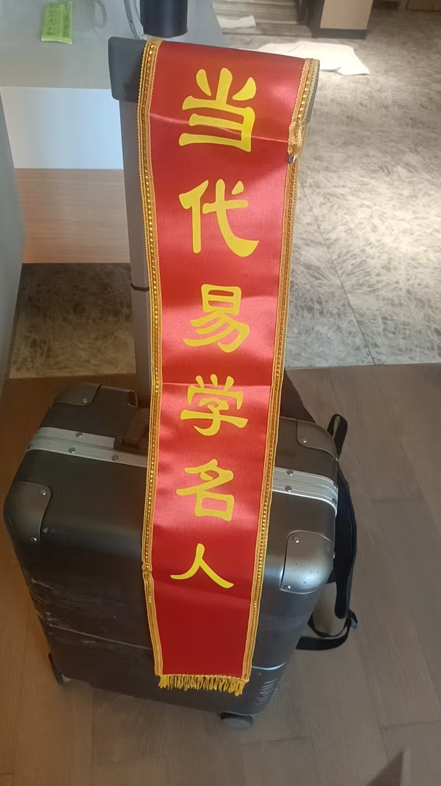
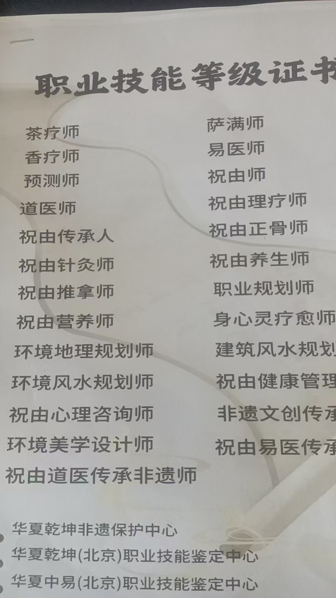

20260720杭州周易大会
原始对话记录有人去杭州的吗
@谢芳玲 你去不
我还在路上
大部队到了
有人拼房吗
他们安排，这样就可以结交新朋友
我刻意安排他们分开住，就是每年结交更多不同朋友
[呲牙][呲牙]
我也是新人
除了结交舍友 ，就是饭友
@紫鸢真人 ，饭友加酒友[偷笑]
十人一桌，自由组合
酒都是赞助商供应
随性喝
那个侯斌肯定来，龙虎山的
到时候合个影
各门各派传承人




杭州那几天：拼房、饭友与名头
群里的第一句很平常：有人去杭州的吗。
后面就热闹起来。@谢芳玲，你去不。我还在路上。大部队到了。有人拼房吗。
安排住宿的人回了一句，说这样好。然后是我这次读到最要紧的一行——"我刻意安排他们分开住，就是每年结交更多不同朋友。"四个呲牙的表情跟在后面。
分开住，不是为了清静，是为了多认识人。一屋子人挤作一堆容易熟，拆开来住，一年才认得一批新的。这个算法很实在。
除了舍友，就是饭友。有人说，饭友加酒友。十人一桌，自由组合，酒是赞助商供的，随性喝。
他还提了一个名字，说那个侯斌肯定来，龙虎山的，到时候合个影。底下跟一句——各门各派传承人。
合影是这门行当的硬通货。在《看风水 整个家族的阴宅》那篇里，他写得更直白：把名头发过去，人家就觉得要一万两万，确实值。泰斗、教授、高级风水师、高级预测师，一张一张发过去，福主心里就定了，聊起来也有面子。
会也不是年年都开得成。另一处记着：这个会一直人多，别的会一直搞不起来，各个协会互相抢人、内斗，"你要开会，对方就举报"。三百人的群，第二天就封了。
老面孔也在少。今年到场的老一辈不多，张志哲教授、钟正教授、侯斌道长，其余多是新面孔。他在别处算过一笔：二〇一二年那帮八十多的老头，估计都走了。
会场上见的人，比会本身更要紧。今年除了老侯，就是紫鸢真人。有人这么数着。
记录到这里就断了，末尾挂着几张合影。我把这几张图来回看了会儿。前排的人站得笔直，后排的人往两边抻着身子。
很平常的一次聚会，就是这样。